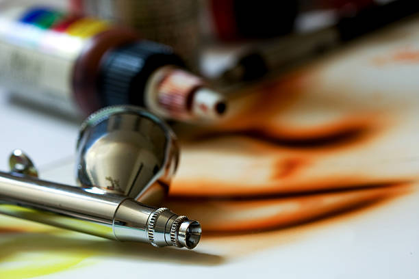

Welcome
What are Garage Kits?
Garage kits are a type of model kit (think of Legos or Gundam) that are typically made of resin. Unlike Legos or Gundam, however, garage kits typically require additional preparation, painting, and assembling before they're complete.
Getting Started
This site will contain all the necessary information on how to get started with garage kits, from learning how to source them to finally assembling them! We'll go over where to source garage kits and supplies, preparing them for painting, painting with airbrushes, and then finally assembly.



Important Info
To preface, kits are notoriously expensive and may even be difficult at first. It's important to remember QUALITY over QUANTITY. Don't rush things! And always remember, you can always go back to your old kits to repaint them!